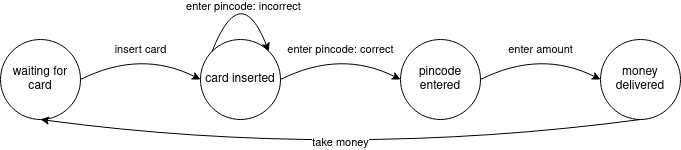
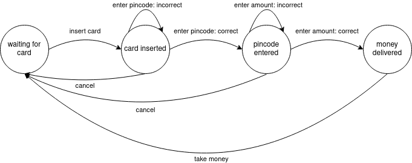

Practicum state pattern
Contents
Practicum state pattern#
Doel#
Kennismaken met het state pattern
Pinautomaat#
Voor dit practicum wordt een pinautomaat gesimuleerd, waar een klant van een bank contanct geld kan opnemen. Zo’n automaat wordt ook wel een ATM genoemd.
Het proces (sterk vereenvoudigd) verloopt als volgt:
De automaat ‘wacht’ tot een bankpas wordt ingevoerd;
De automaat leest de bankpas en vraagt om de pincode;
Na invoer van een correcte pincode vraagt de automaat om de gewenste hoeveelheid geld;
Het geld komt uit de automaat en de pas wordt teruggegeven. De automaat ‘wacht’ tot de klant het geld pakt. Zodra dit gebeurt, gaat de automaat terug naar de eerste stap.
Dit proces kan beschreven worden in het onderstaande state diagram: 
Elke cirkel duidt een toestand (‘state’) aan van de ATM. De pijlen laten zien welke overgangen tussen toestanden mogelijk zijn. In de tekst bij de pijlen staan de acties beschreven.
Niet elke actie betekent overgang naar een andere toestand. Invoer van een incorrecte pincode zorgt ervoor dat de ATM indezelfde staat blijft. In dit vereenvoudigde model is geen sprake van beveiliging tegen veelvuldige invoer van een onjuiste pincode. Ook is het denkbaar dat bij aanvraag van een te groot geldbedrag de automaat in de toestand ‘pincode entered’ blijft in plaats van over te gaan naar de toestand ‘money delivered’.
Code voor de pinautomaat#
De pinautomaat is in de onderstaande klasse ATM geïmplementeerd:
public class ATM {
public static final int STATE_WAITING_FOR_CARD = 1;
public static final int STATE_CART_INSERTED = 2;
public static final int STATE_PINCODE_ENTERED = 3;
public static final int STATE_MONEY_DELIVERED = 4;
private int state = STATE_WAITING_FOR_CARD;
// Publieke methodes
public void insertCard() {
if (state==STATE_WAITING_FOR_CARD) {
System.out.println("Card inserted.");
state=STATE_CART_INSERTED;
} else {
System.out.println("Card already inserted.");
}
}
public void enterPincode(String pin) {
if (state==STATE_CART_INSERTED) {
if (pin.equals("1234")) {
System.out.println("Pincode correct");
state=STATE_PINCODE_ENTERED;
} else {
System.out.println("Incorrect pincode");
}
} else {
System.out.println("Cannot enter pincode.");
}
}
public void enterAmount(int amount) {
if (state==STATE_PINCODE_ENTERED) {
if (amount>0) {
System.out.println("EUR "+amount+" is delivered. Please take your money and card.");
state=STATE_MONEY_DELIVERED;
}
} else {
System.out.println("Cannot enter amount.");
}
}
public void takeMoney() {
if (state==STATE_MONEY_DELIVERED) {
System.out.println("Money and card taken. Good bye!");
state=STATE_WAITING_FOR_CARD;
} else {
System.out.println("No money.");
}
}
}
Voor elke handeling (kaart invoeren, pincode invoeren, bedrag invoeren, geld pakken) is een methode aanwezig. In de instantievariabele state wordt bijgehouden in welke toestand de ATM is.
Neem de klasse over in een nieuw project of package.
Maak een klasse Main met een main-methode.
Een eenvoudige test voor de klasse ATM:
ATM atm = new ATM();
atm.insertCard();
atm.enterPincode("4321");
atm.enterPincode("1234");
atm.enterAmount(100);
atm.takeMoney();
Het is mogelijk om de actie-methoden aan te roepen op een moment waarop de actie niet mogelijk is. Bijvoorbeeld een pincode invoeren als er nog geen bankpas is ingevoerd. In dat geval verschijnt een foutmelding (een exception zou beter zijn);
ATM atm = new ATM();
atm.enterPincode("1234");
Elke actie-methode begint daarom met een if-statement waarmee de huidige toestand wordt gecontroleerd.
Een volledige interactieve implementatie van een gebruikersinterface is als volgt:
ATM atm = new ATM();
Scanner scanner = new Scanner(System.in);
char command;
do {
System.out.println("0. Quit");
System.out.println("1. Insert card");
System.out.println("2. Enter pincode");
System.out.println("3. Enter amount");
System.out.println("4. Take money");
System.out.print("Enter action (0..4): ");
String s = scanner.nextLine().trim();
System.out.println();
command=(s.length()==1) ? s.charAt(0) : '\0';
if (command=='1') {
atm.insertCard();
}
if (command=='2') {
System.out.print("Enter pincode: ");
String pincode=scanner.nextLine();
atm.enterPincode(pincode);
}
if (command=='3') {
System.out.print("Enter amount of money: ");
try {
int amount = Integer.parseInt(scanner.nextLine());
atm.enterAmount(amount);
} catch(NumberFormatException e) { }
}
if (command=='4') {
atm.takeMoney();
}
System.out.println();
} while (command!='0');
Plaats deze code in de main-methode en test de ATM.
Hoewel de ATM technisch gezien werkt, is verbetering mogelijk. Het state pattern biedt de mogelijkheid om voor elke toestand bepaald gedrag van een klasse in te stellen. Daarbij wordt voor elke state een klasse gemaakt die het gedrag voor die state implementeert (concreet: voor elke actie een methode).
State pattern#

De kern van het Iterator-pattern wordt gevormd door de context-klasse en de state-interface State.
De context-klasse is de klasse die verschillende toestanden kan hebben.
Deze klasse bevat publieke methodes voor alle acties.
De interface state bevat methodes voor alle acties.
Voor elke state is een klasse aanwezig. Deze klassen implementeren de interface State.
Indien de methode uit State in een bepaalde toestand niet aangeroepen kan worden, dan geeft de methode een foutmelding (dit kan op de console maar ook door middel van een exception).
De context-klasse bevat een instantie-variabele state van type State die de instantie van huidige toestand bevat.
Elke methode voor een actie (in het diagram request genoemd) roept simpelweg de methode aan van het object in state (in het diagram handle genoemd).
Naast de publieke methoden voor acties bevat de context-klasse ook:
Getters voor instanties van elke toestand
Setter voor de huidige toestand (instantie-variabele state).
Eventueel methodes die aangeroepen kunnen worden door de state-klassen
Elke state-klasse heeft een verwijzing naar de context-klasse. Deze wordt doorgegeven via de constructor.
Stap 1. Interface State maken#
De interface State bevat definities van methodes voor elke actie. De inhoud van deze interface verschilt daarom per situatie.
De interface State voor de ATM:
public interface State {
void insertCard();
void enterPincode(String pin);
void enterAmount(int amount);
void takeMoney();
}
Neem deze interface over in het project.
Stap 2. De context-klasse maken#
Dit is de belangrijke stap bij het implementeren van het state pattern.
Bijna alle code uit de huidige versie van ATM wordt gebruikt, maar verspreid over veel verschillende klassen. Daarom kan het handig zijn om deze te hernoemen naar ATMold.
Begin van de nieuwe klasse ATM:
public class ATM {
private State state;
// Publieke methodes
public void insertCard() {
state.insertCard();
}
public void enterPincode(String pin) {
state.enterPincode(pin);
}
public void enterAmount(int amount) {
state.enterAmount(amount);
}
public void takeMoney() {
state.takeMoney();
}
// Setter voor de huidige toestand
void setState(State state) {
this.state = state;
}
// Methodes die aangeroepen worden vanuit de states
// todo
// Getters voor de states
// todo
}
De context-klasse heeft een instantie-variabele die een instantie van de huidige toestand bevat. De publieke methodes voor de acties roepen de betreffende methode van de huidige toestand aan.
Deze klasse is niet klaar. Om deze klasse te voltooien zijn de klassen van de toestanden nodig.
Stap 3. De states maken#
Voor elke toestand wordt een klasse gemaakt.
De eerste toestand is ‘waiting for card’.
Maak de klasse WaitingForCardState:
public class WaitingForCardState implements State {
private ATM atm;
public WaitingForCardState(ATM atm) {
this.atm = atm;
}
@Override
public void insertCard() {
System.out.println("Card inserted.");
atm.setState(atm.getCardInsertedState());
}
@Override
public void enterPincode(String pin) {
System.out.println("Cannot enter pincode.");
}
@Override
public void enterAmount(int amount) {
System.out.println("Cannot enter amount.");
}
@Override
public void takeMoney() {
System.out.println("No money.");
}
}
Maak ook de klasse CardInsertedState:
public class CardInsertedState implements State {
private ATM atm;
public CardInsertedState(ATM atm) {
this.atm = atm;
}
@Override
public void insertCard() {
System.out.println("Card already inserted.");
}
@Override
public void enterPincode(String pin) {
if (pin.equals("1234")) {
System.out.println("Pincode correct");
atm.setState(atm.getPincodeEnteredState());
} else {
System.out.println("Incorrect pincode");
}
}
@Override
public void enterAmount(int amount) {
System.out.println("Cannot enter amount.");
}
@Override
public void takeMoney() {
System.out.println("No money.");
}
}
De methoden getCardInsertedState en getPincodeEnteredState worden in de volgende stap gemaakt.
Stap 4. De states gebruiken#
Om de states te kunnen gebruiken, zijn aanvullingen nodig op de context-klasse.
Ten eerste moeten er een instantie van elke state gemaakt worden:
private final State waitingForCardState = new WaitingForCardState(this);
private final State CardInsertedState = new CardInsertedState(this);
private final State PincodeEnteredState = new PincodeEnteredState(this);
private final State MoneyDeliveredState = new MoneyDeliveredState(this);
Plaats deze code is in het begin van de klasse ATM*.
De instantie-variabele state wordt geïnitialiseerd met de initiële toestand:
private State state = waitingForCardState;
Verder zijn voor deze instanties getters nodig. Deze kunnen geplaatste worden onder het commentaar ‘Getters voor de states’.
State getWaitingForCardState() {
return waitingForCardState;
}
Plaats deze getter in de klasse ATM en maak getters voor de andere states.
De klassen PincodeEnteredState en MoneyDeliveredState. Maak deze klassen. Deze zijn vergelijkbaar met de andere twee states. Benodigde code kan uit de oude versie van ATM gehaald worden.
Testen#
Test de nieuwe versie van ATM. De code zal pas compilen als alle benodigde klassen er zijn.
Onvolmaaktheden#
Het pattern is correct. Eventueel kunnen de foutmeldingen worden vervangen door exceptions. Java bevat de ingebouwde methode IllegalStateException.
De ATM is heeft echter nog wel een aantal belangrijke gebreken: Er kan nergens geannuleerd worden, er wordt niet gecontroleerd of er genoeg geld is en er is een pincode hardcoded in een state.
Verbetering#
De mogelijkheid om te annuleren en controle op voldoende geld toevoegen, levert het volgende state diagram op: 
Er is één actie toegevoegd: cancel. Deze is van toepassing in de states ‘card inserted’ en ‘pincode entered’. In de state ‘waiting for card’ valt niets te annuleren. En in de state ‘money delivered’ is annuleren geen optie omdat de transactie al plaats heeft gevonden.
Controle of er genoeg geld is, is geen nieuwe actie, maar een aanvulling op een bestaande actie: enterAmount.
Verbetering: Annuleren#
Implementeer deze verbetering door de volgende stappen uit te voeren:
Methode cancel toevoegen aan de interface State
Methode cancel implementeren in alle state-klassen. De methode geeft in sommige states een foutmelding en in sommige states keert deze methode terug naar de state WaitingForCardState.
Methode cancel toevoegen aan de klasse ATM
Voeg aan het menu in de main-methode de optie “5. Cancel” toe
Test of het annuleren werkt. Als alles goed is, is het mogelijk om in elke toestand terug te keren naar het begin, tenzij het geld al is verstrekt.
Verbetering: Controle op hoeveelheid geld#
Een ATM bevat een bepaalde hoeveelheid geld. Er dient gecontroleerd te worden of er genoeg geld aanwezig voordat het geld verstrekt wordt.
In de klasse ATM wordt bijgehouden hoeveel geld er aanwezig is:
private int balance = 1000;
Onder het commentaar ‘Methodes die aangeroepen worden vanuit de states’ kunnen de volgende methodes worden gemaakt:
int getBalance() {
return balance;
}
void removeMoney(int amount) {
balance-=amount;
}
Voeg aan de methode enterAmount van de klasse PincodeEnteredState controle toe op beschikbaarheid van geld.
Indien er niet genoeg geld beschikbaar is, geef een foutmelding, en blijf in de state PincodeEnteredState.
Indien er wel genoeg geld beschikbaar is, roep removeMoney aan om het geld uit de machine te halen voordat het geld wordt verstrekt.
Nog meer verbeteringen#
Het implementeren van de onderstaande twee verbeteringen zijn extra uitdagingen.
Als de ATM leeg is, dan zou de ATM in een toestand moeten komen waarbij niets mogelijk is, zodat een klant ook niet meer een pas kan invoeren om er vervolgens achter de komen dat de ATM leeg is. Dat kan gerealiseerd worden door een state toe te voegen: ATMEmpty. Op de juiste plek moet de beslissing worden genomen om naar deze toestand over te schakelen. Hoewel het aannemelijk lijkt om dit te doen bij het aanvragen van het geld (in PincodeEnteredState) ontstaat het probleem dat de MoneyDeliveredState nog wel nodig is als een klant het laatste geld uit de automaat haalt. Daarom moet de beslissing om naar ATMEmpty te gaan vanuit MoneyDeliveredState worden genomen.
De hardcoded pincode uit CardInsertedState halen. Maak hiervoor een klasse Card met instantie-variabele voor pincode en een methode checkPincode. De card kan worden meegegeven bij aanroep van de methode enterPincode.
Het project kan nog verder uitgebreid worden door het saldo van de rekening in de klasse Card bij te houden en bij het opnemen van geld niet alleen te controleren op de geldhoeveelheid in de machine, maar ook het saldo van de rekening.